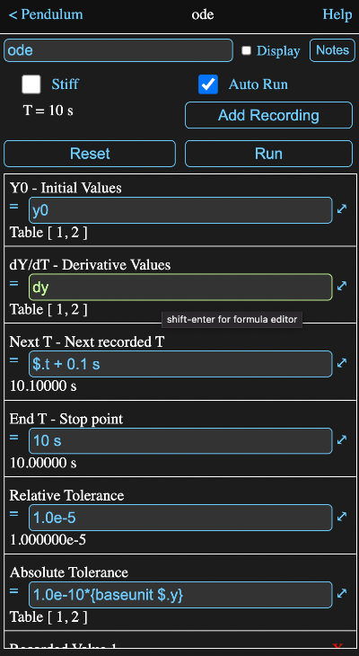
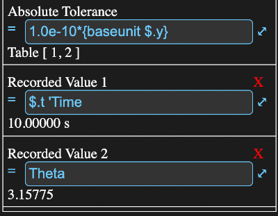

The ODE solver is used to integrate a set of one or more ordinary differential equations (ODE). An ODE is function with a single independent variable and a derivative with respect to that variable.
Essentially it determines y with respect to t from t=0 to some end point, where dy/dt is some function of y and y and dy/dt are arrays or tables of the same size.
Math Minion uses code derived from the Sundials suite of solvers developed at the Lawerence Livermore National Library in the US. It uses a variant of the Adam Moulton method for non-stiff problems and Backwards Difference Formulas (BDF) when the problem is designated as stiff.
As the integration proceeds, the solver makes available an array or table of y values, which are initially, at t = 0, equal to the supplied Y0 value.
These y values must be used to calculate a dy/dt array or table, which is used by the solver to calculate the next set of y values.
Part of the information view for the ODE solver of the pendulum example in the Getting Started session is shown below.
The inputs are:
When checked, the solver will use a backward difference formula method for the integration.
This is preferred when the time constants, or equivalent if time is not the independent variable, of the derivatives vary greatly in magnitude. That is, when some elements change very quickly compared to others.
When this is unchecked, an Adam Moulton method is used.
When this is checked, the solver will run automatically when required to by changes to its inputs etc.
Note: When unchecked, changing the inputs to the calculation will not cause a reset to T=0. By extending the stop time the run can be resumed from where it stopped.
However, recorded values will be erased and a new recording started from the resume point.
The current value of T will be displayed just below the stiff check box.
This adds a Recorded Value> row to the bottom of the input table.
The formula entered into this row will be evaluated at each NextT value of T and the results stored.
They can be accessed as a parameter when the solution is complete.
These parameters are named R1, R2 etc. and will return an array with values for each record interval.
If the recorded values at each step are themselves arrays or matrices, then when accessed, a matrix will be returned with each row being the recorded step array or unwound matrix.
If you supply a name as a comment to the recorded value formula (that is have a single quote followed by a name at the end of the formula), then you can use that name as a reference to the recorded value array, rather than the more cryptic R1, R2 etc. Also if the formula is just a tool name, that can also be used as a parameter.
Scrolling down, the rest of the information view from above looks like:
The first recorded value has a comment Time, so the recorded values could be accessed from ode.time.
The second recorded value has a formula that is just Theta and its value could be accessed by ode.theta.
Along with the formula field the last value for the recorded value is also displayed on the row.
Tapping on the red X will remove that recording.
Sets the T value back to zero, the Y outputs to Y0 and forgets any recorded values. If auto run is checked, the solver will rerun immediately.
Runs the solver (happens automatically if auto run is checked).
Note that if T is not zero and EndT is greater than T, presumably because it was modified, the solution will continue from the current T.
The initial values for when T = 0. The size and type of this value will determine the size and type of the output Y values.
At T = 0, the output Y values will have this value. If Y0 is an array, then the output array will be an array the same unit type (all calculations are actually done in SI).
If Y0 is a table value, then Y will be a table with the same number of columns and rows and the columns will have the same unit types as the corresponding columns in Y0. That is the case in the example above.
The calculated derivatives as a function of the output Y and T values.
They must be the same type (array or table) and size as the Y0 value and their unit types should be compatible with those of Y0 / T, where the T unit type is the same as that for EndT.
The T value to stop at.
The integration is always carried on from T = 0 to T = EndT, although you could perform transformations in your calculation of dY/dT to offset this if appropriate.
The output T parameter will have the same unit type as this value.
This is the T value at which the next set of values for the formulas designated in the "Recorded Values" section should be recorded.
It is first evaluated at T = 0 and then at each successive record time. It is done as a formula in terms of T so that non-linear record intervals can be specified.
This value must have the same unit type as EndT.
Note that this does not dictate the time step for the actual integration, which is determined by the need to keep accumulated errors in check.
This is a measure of the allowed relative errors. Thus the default value of 1e-5 means the errors are controlled to 0.001%.
This is used to control errors when a y value might become so small that relative error becomes meaningless.
It should be set to some small value below which errors are unimportant.
If Y0 is an array, this value can either be a scalar, in which case it is used for all values, or an array of the same size as Y0 if different tolerances are desired for the different elements.
If Y0 is a table value, then this should be a table value with the same number of columns, but only a single row containing the tolerances to be used for the corresponding Y columns.
It must have the same unit type(s) as Y0. The default value is
1.0e-10*{baseunit $.y}
which ensures to correct unit is used.
Parameters that can be accessed in the form a.b where a is the tool name and b is the parameter name.
If comments are used on the recorded value formulas, they will be used as the column names, otherwise the formula itself will be.
If a recorded value has multiple columns, these will be included with "_n" appended to the recorded value name, where n is the column number.